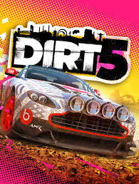

Here are some games in the category of Racing that we think you would like.
DIRT5
Codemasters

Dirt 5 (stylised as DIRT5) is a racing video game developed and published by Codemasters. It is the
fourteenth game in the Colin McRae Rally series and the eighth game to carry the Dirt title. The game was
released for Microsoft Windows, PlayStation 4 and Xbox One on 6 November 2020, is scheduled to be released
for Xbox Series X/S on 10 November 2020, and for PlayStation 5 on 12 November 2020 (for North America,
Oceania, Japan, and South Korea) and 19 November 2020 (for most other regions), and for Stadia in 2021.
Need for Speed Heat (stylized as NFS Heat) is a racing video game developed by Ghost Games and published by
Electronic Arts for Microsoft Windows, PlayStation 4 and Xbox One. It is the twenty-fourth installment in
the Need for Speed series and commemorates the series' 25th anniversary. It was released on November 8,
2019. The game received mixed reviews from critics, who mostly found the game to be an improvement over the
2015 Need for Speed reboot and Payback but not enough to be a full return to form for the franchise.